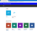
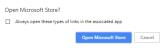
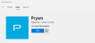
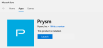

Getting Prysm for desktop
- Go to the Microsoft Store for Business.
businessstore.microsoft.com/en-us/store - Sign in with your company credentials.
Prysm is available in your company store.
 - Click Prysm Sharing Agent.
Clicking Prysm Sharing Agent to install it before you install Prysm is the fastest method for installation.Tip: If you don't install Prysm Sharing Agent, you won't be able to use Prysm for desktop's sharing features. - Click Install.
Microsoft prompts you to open the Microsoft Store app. - Click Open Microsoft Store.
 - In the Microsoft Store app, click Install again.
The Prysm Sharing Agent downloads and installs. - Click Launch.
The Microsoft Store app automatically takes you to the page to install the Prysm app.
 - Click Install to install Prysm for desktop.
Prysm for desktop downloads and installs. - Click Launch.

Prysm for desktop opens, and you have access to all of its sharing features!
{kind=link}
{kind=link}
{kind=link}
{kind=link}
{kind=link}
{kind=link}
- If Prysm for desktop isn't already open on your device, here's how to open it:
- In the Search field of your Windows 10 device, search for Prysm and select Prysm from the installed apps.
- From the System Tray, select Prysm.Note: If you can't find Prysm, it may not be installed. See Installing Prysm for Desktop for information.
- In the Search field of your Windows 10 device, search for Prysm and select Prysm from the installed apps.
- Sign in using network SSO credentials or your Prysm username and password.